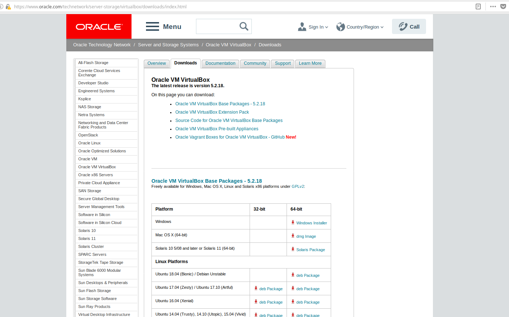
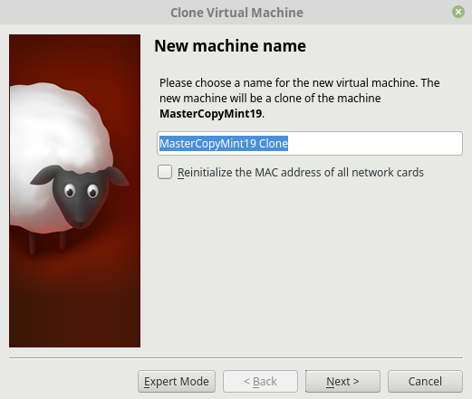
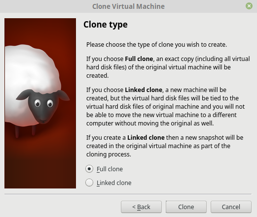
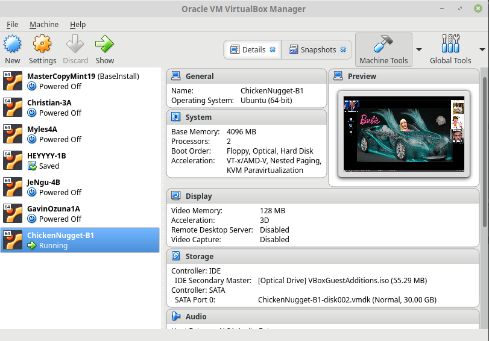
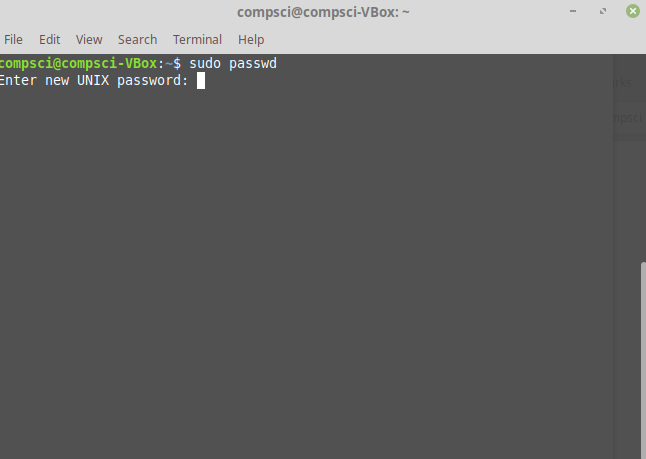
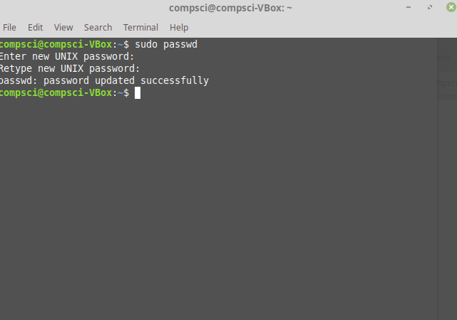
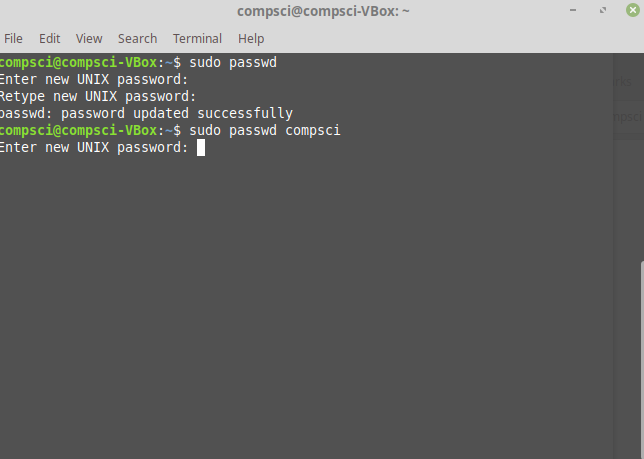
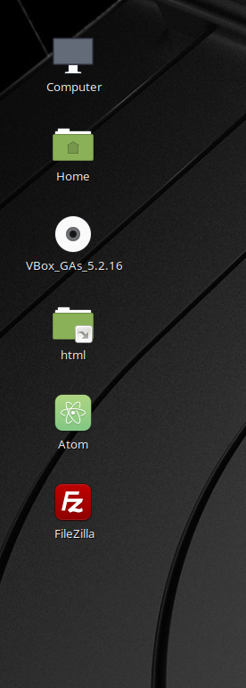
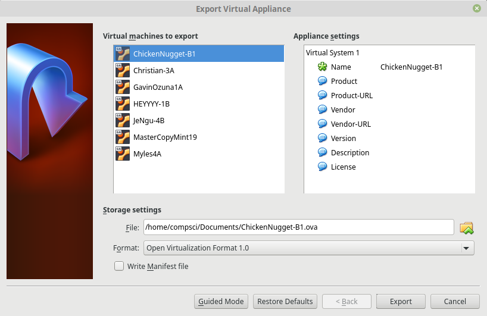

VM INSTRUCTIONS
1. download Virtual Box from Oracle

2. clone a new VM

3. edit the settings

4. run the VM

5. change root password

6. confirm change

7. change the password of the user on the computer

8. Download any essential software you want to keep on your base copy

9. upload the file to the cloud
